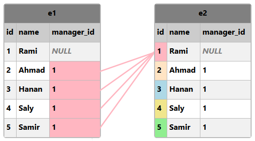
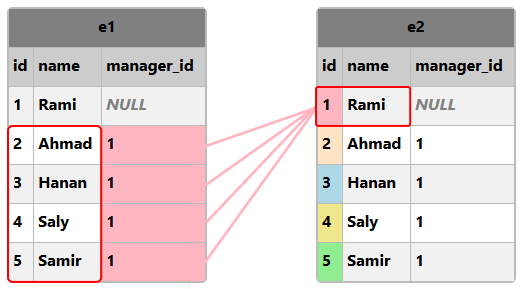

SQLطرق ربط معلومات الجدول نفسه عند جلبها
في حال كان الجدول نفسه يحتوي على أعمدة قيمها مترابطة ببعضها البعض و تريد إسترجاعها بشكل مرتب, هنا يجب أن تربط الأعمدة مع بعضها بأسلوب يقال له الربط الذاتي ( Self Join ) لأننا نتعامل مع أعمدة موجودة في نفس الجدول.
حالات نطبق فيها الربط الذاتي
في مواقع التواصل الإجتماعي مثل فيسبوك يمكنك وضع تعليق ( Comment ) على أي منشور ( Post ) تراه و بعدها يمكن لشخص أخر أن يضع تعليق آخر كردّ على تعليقك أنت. إذاً هنا عندنا ربط ذاتي لأن التعليق الجديد مرتبط بالتعليق الأول و كلاهما موضوع في نفس الجدول.
في صفحات الويب نفسها أحياناً تلاحظ أن صفحات الموقع نفسها مربوطة ببعضها فمثلاً تجد الموضع يظهر لك أن الصفحة الفلانية تابعة لصفحة أخرى.
في هذه الحالة أيضاً يوجد ربط ذاتي لأن الصفحة التي يظهر لك أنها تابعة لصفحة أخرى, هي صفحة مرتبطة بها و كلاهما موضوع في نفس الجدول.
تجهيز قاعدة البيانات التي سنطبق عليها
قم بتنفيذ الإستعلام التالي حتى تنشئ قاعدة بيانات جديدة إسمها harmash و تنشئ فيها جدول إسمه employees يحتوي على بيانات 5 موظفين.
الإستعلام
-- سيتم حذفها harmash في حال كان يوجد بالأساس قاعدة بيانات إسمها
DROP DATABASE IF EXISTS harmash;
-- harmash هنا قمنا بإنشاء قاعدة بيانات جديدة إسمها
CREATE DATABASE harmash;
-- harmash هنا قمنا بتحديد أن أي إستعلام جديد سيتم تنفيذه على قاعدة البيانات
USE harmash;
-- يتألف من 5 أعمدة users هنا قمنا بإنشاء جدول جديد إسمه
-- لأننا قمنا بتحديدها قبل إستدعاء هذا الأمر harmash سيتم إنشاء هذا الجدول بداخل قاعدة البيانات
CREATE TABLE employees (
id INT NOT NULL PRIMARY KEY AUTO_INCREMENT,
name VARCHAR(50),
manager_id INT
);
-- هنا قمنا بإضافة 10 أسطر في الجدول, أي أضفنا معلومات 10 مستخدمين
-- لاحظ أننا لم نحدد أسماء الأعمدة التي سنضع فيها البيانات لأننا قمنا بملئ جميع المعلومات
-- في البداية هو حتى يكون عدد القيم الموضوعة يساوي عدد أعمدة الجدول null سبب وضع الكلمة
-- ستقوم قاعدة البيانات بوضع رقم تعرفة مختلف لكل سطر null مكان الكلمة
INSERT INTO employees VALUES (null, "Rami", null);
INSERT INTO employees VALUES (null, "Ahmad", 1);
INSERT INTO employees VALUES (null, "Hanan", 1);
INSERT INTO employees VALUES (null, "Saly", 1);
INSERT INTO employees VALUES (null, "Samir", 1);
بعد تنفيذ الإستعلام السابق في phpMyAdmin سيتم إنشاء قاعدة البيانات harmash و إنشاء الجدول employees بداخلها.
قم بالنقر على إسم قاعدة البيانات harmash من القائمة اليسرى حتى تبدأ بالتعامل معها و تطبيق ما ستتعلمه في هذا الدرس.
البيانات التي قمنا بإضافتها بشكل إفتراضي في الجدول employees.
| id | name | manager_id |
| 1 | Rami | NULL |
| 2 | Ahmad | 1 |
| 3 | Hanan | 1 |
| 4 | Saly | 1 |
| 5 | Samir | 1 |
نلاحظ أن جدول الموظفين يتضمن عامودين متشابهين هما id و manager_id و فكرتهما هي التالية:
قراءة بيانات الموظفين
الموظف Rami, لا يوجد عنده manager_id و هذا يعني أنه هو المدير.
بالمنطق إذا كنت موظف في شركة و لا يوجد مدير مسؤول عنك, فهذا يعني أنك أنت نفسك مدير الشركة.
الموظف Ahmad, مديره هو الموظف الذي يملك رقم id يساوي 1, أي الموظف Rami هو مديره.
الموظفة Hanan, مديرها هو الموظف الذي يملك رقم id يساوي 1, أي الموظف Rami هو مديره.
الموظفة Saly, مديرها هو الموظف الذي يملك رقم id يساوي 1, أي الموظف Rami هو مديره.
الموظف Samir, مديره هو الموظف الذي يملك رقم id يساوي 1, أي الموظف Rami هو مديره.
طريقة ربط معلومات الجدول نفسه ببعضها عند جلبها
في البداية عند ربط قيم الجداول عند جلبها, سبق و عرفنا أنه يوجد 4 أشكال أساسية لربط قيمهم كما في الصورة التالية.

الآن لربط قيم الجدول نفسه ببعضها عند جلبها, نقوم بجلب قيم الجدول نفسه مرتين و من ثم نربطهما ببعضهما كأنهما جدولين منفصلين عن بعضهما بالضبط كما كنا نربط الجداول مع بعضها.
حتى تتمكن من جلب قيم الجدول نفسه مرتين, يجب أن تذكر إسم الجدول مرتين و تعطيه إسمين مختلفين. عندها يمكنك أن تتعامل معه و كأنه جدولين منفصلين.
في مثالنا الحالي, النسخة الأولى من الجدول employees سنقوم بتسميتها e1, و النسخة الثانية سنقوم بتسميتها e2.

أمثلة حول ربط معلومات الجدول نفسه ببعضها عند جلبها
المثال الأول
الإستعلام التالي يقوم بجلب id و name كل موظف لديه مدير بالإضافة إلى name الموظف الذي يعتبر مدير الشخص.
ما فعلناه لربط القيم المشتركة في الجدول نفسه ببعضها هو إعطاء الجدول إسمين مختلفين هما e1 و e2 مع وضع الكلمة JOIN بينهما.
الصورة التالية توضح كيف سيتم ربط قيم الجدولين.

إذاً سيتم جلب قيم العامودين id و name من الجدول e1, و قيم العامود name من الجدول e2.
الإستعلام
SELECT -- هنا قمنا بتحديد الأعمدة التي نريد الحصول علي قيمها مع تحديد كل عامود من أي جدول سيتم جلبه
e1.id AS 'Employee Id', -- الموظف فيه id لأننا سنعرض Employee Id هذا العامود قمنا بتسميته
e1.name AS Employee, -- لأننا سنعرض إسم الموظف فيه Employee هذا العامود قمنا بتسميته
e2.name AS Manager -- لأننا سنعرض إسم الموظف الذي يعتبر بمثابة مدير للموظف Manager هذا العامود قمنا بتسميته
FROM
employees AS e1 JOIN employees AS e2 -- مع القيم المشتركة بينهما فقط e2 و في جدول آخر إسمه e1 في جدول إسمه employees هنا قمنا بتحديد أننا نريد كل قيم الجدول
ON
e1.manager_id = e2.id; -- e2 الموجودة في الجدول id هي قيم العامود e1 الموجودة في الجدول manager_id هنا حددنا أن قيم العامود
سنحصل على النتيجة التالية عند تنفيذ الإستعلام.
| Employee ID | Employee | Manager |
| 2 | Ahmad | Rami |
| 3 | Hanan | Rami |
| 4 | Saly | Rami |
| 5 | Samir | Rami |
المثال الثاني
الإستعلام التالي يقوم بجلب id و name كل موظف بالإضافة إلى name الموظف الذي يعتبر مدير الشخص.
ما فعلناه لربط كل القيم الموجودة في الجدول نفسه ببعضها هو إعطاء الجدول إسمين مختلفين هما e1 و e2 مع وضع الكلمة LEFT JOIN بينهما.
الصورة التالية توضح كيف سيتم ربط قيم الجدولين.
إذاً سيتم جلب قيم العامودين id و name من الجدول e1, و قيم العامود name من الجدول e2.
الإستعلام
SELECT -- هنا قمنا بتحديد الأعمدة التي نريد الحصول علي قيمها مع تحديد كل عامود من أي جدول سيتم جلبه
e1.id AS 'Employee Id', -- الموظف فيه id لأننا سنعرض Employee Id هذا العامود قمنا بتسميته
e1.name AS Employee, -- لأننا سنعرض إسم الموظف فيه Employee هذا العامود قمنا بتسميته
e2.name AS Manager -- لأننا سنعرض إسم الموظف الذي يعتبر بمثابة مدير للموظف Manager هذا العامود قمنا بتسميته
FROM
employees AS e1 LEFT JOIN employees AS e2 -- e2 و القيم المشتركة معها فقط من e1 مع كل قيم e2 و في جدول آخر إسمه e1 في جدول إسمه employees هنا قمنا بتحديد أننا نريد كل قيم الجدول
ON
e1.manager_id = e2.id; -- e2 الموجودة في الجدول id هي قيم العامود e1 الموجودة في الجدول manager_id هنا حددنا أن قيم العامود
سنحصل على النتيجة التالية عند تنفيذ الإستعلام.
| Employee ID | Employee | Manager |
| 1 | Rami | NULL |
| 2 | Ahmad | Rami |
| 3 | Hanan | Rami |
| 4 | Saly | Rami |
| 5 | Samir | Rami |
المثال الثالث
الإستعلام التالي هو نفس الإستعلام الموضوع في المثال الثاني تماماً مع فرق واحد و هو أنه في حال كان الموظف لا يوجد عنده مدير - أي الحقل Manager عنده يساوي NULL - سيتم تبديل قيمته بعبارة 'No Manager'.
الإستعلام
SELECT
e1.id AS 'Employee Id',
e1.name AS Employee,
IFNULL(e2.name, 'No Manager') AS Manager -- 'No Manager' فارغاً سيتم تبديله بعبارة Manager في حال كان الحقل الموضوع في العامود
FROM
employees AS e1 LEFT JOIN employees AS e2
ON
e1.manager_id = e2.id;
سنحصل على النتيجة التالية عند تنفيذ الإستعلام.
| Employee ID | Employee | Manager |
| 1 | Rami | No Manager |
| 2 | Ahmad | Rami |
| 3 | Hanan | Rami |
| 4 | Saly | Rami |
| 5 | Samir | Rami |

 محرر الويب
محرر الويب نظام الألوان
نظام الألوان محول الوحدات
محول الوحدات محلل عناوين الشبكات
محلل عناوين الشبكات